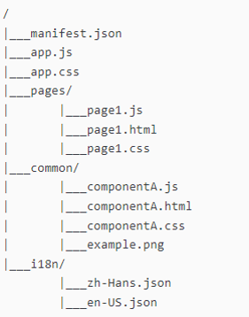

Leaving presentation mode.
MiniApp Packaging, Manifest, and MiniApp Components
Industry Meetup: W3C MiniApps Standardization and Implementation
Martin Alvarez-Espinar
Vision Hotel, Beijing (CN) - 22 Dec 2023
Contents
Progress and Next-Steps of:
- MiniApp Packaging
- MiniApp Manifest
- Incubation of MiniApp Components
Contents
Progress and Next-Steps of:
- MiniApp Packaging
- MiniApp Manifest
- Incubation of MiniApp Components
MiniApp Packaging
Describes the logical and physical structure of a MiniApp
- Pages, components, styles,…
- Packaging format, file-system, directories…
- Digital signatures (for developer, publishers, others…)
Status: WD
Types of Resources

Pages & Components
- HTML: based on templates
- JS: ECMAScript profile
- CSS: CSS profile
- Resources for i18n
Based on Web Components
File System

Homogeneous structure:
manifest.json: metadata, setupapp.js, app.css: global logic, stylespages/: page resourcescommon/: shared media, script resources i18n/: localization of content
Packaging: Open Issues
Security and efficiency concerns (TAG's Review):
- Preservation of the origin model
- UA
SHOULD use SSL/TSL for distribution
- UA
SHOULD keep track of the origin (save it in manifest?)
- Secure context (integrity of the package)
- Package
SHOULD be hashed (integrity);
- and
SHOULD be signed (e.g, developer + distributor)
- Efficiency of ZIP container
Ongoing discussion.
Contents
Progress and Next-Steps of:
- MiniApp Packaging
- MiniApp Manifest
- Incubation of MiniApp Components
MiniApp Manifest
JSON document to describe a MiniApp
- Based on Web App Manifest (
extends)
- 15 attributes with information for user agents (super-app, OS) and publishers (icons, descriptions, versions…)
- Runtime configuration (themes, colors, orientation…)
Status: WD
Manifest Next: Internationalization
Localization of manifest members
Currently, MiniApps apply text localization techniques during the compilation stage
We must distribute texts in different languages and localize color schemes, icons, and images (good for marketplaces).
Expected alignment with Web App Manifest (working draft)
Manifest Next: Content Security Policy (CSP)
Increase security and integrity of MiniApps
Currently, the standard CSP directives enable restricting the origin of resources through HTTP headers like default-src, connect-src, img-src, script-src, or font-src
- The system caches the MiniApp, and user agents do not always have access to HTTP headers.
- We need to guarantee security and avoid content and scripts from non-trusted origins.
Manifest Next: CSP
"content-security-policy" :
{
"default-src":
[
"trusted1.example.org",
"trusted2.example.org"
],
"origin": "superapp-store.example.org"
}
Open discussion
Manifest: Open Issues
- Internationalization (
lang, dir, string) #4
- Alignment with
req_permissions (IWA's permissions_policy) #57
- Content Security Policy (i.e., origin and trusted sources) #42
- Alignment of
app_id and Web App's id #43
Contents
Progress and Next-Steps of:
- MiniApp Packaging
- MiniApp Manifest
- Incubation of MiniApp Components
MiniApp Components
To MiniApp Pages (based on different MiniApp implementations)
- How to declare, reuse, access components
- Templating, content interpolation, styling, scripting...
- Built-in components (i.e.,
<image>, <ad>, <map>)
Status: Draft Community Group Report